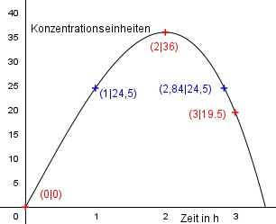
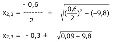

Aufgabe 146 Ein Arzneimittelhersteller will durch eine ganzrationale Funktion 3. Grades beschreiben, wie sich die Konzentration eines Medikaments nach der Einnahme abhängig von der Zeit im Körper verändert, um sie dann für beliebige Zeiten ablesen zu können. Zu Beginn liegt noch keine Konzentration vor, nach 2 Stunden sind es 36 Einheiten und nach 3 Stunden 19,5. Er weiß, dass die höchste Konzentration nach 2 Stunden erreicht ist. Wann beträgt sie 24,5 Einheiten?  Allgemeine Form einer ganzrationalen Funktion 3. Grades: f(x) = ax3 + bx2 + cx + d f’(x) = 3ax2 + 2bx + c f’’(x) = 6ax + 2b 4 Bedingungen: 1. Zu Beginn liegt noch keine Konzentration vor, bedeutet: f(0) = 0 --> a * 0,43 + b * 0,42 + c * 0,4 + d = 0 --> d = 0 2. Nach 2 Stunden sind es 36 Einheiten bedeutet: (d = 0 eingesetzt) f(2) = 36 --> a * 23 + b * 22 + c * 2 = 36 --> 8a + 4b + 2c = 36 I 3. .. und nach 3 Stunden 19,5 bedeutet: (d = 0 eingesetzt) f(3) = 19,5 --> a * 33 + b * 32 + c * 3 = 19,5 --> 27a + 9b + 3c = 19,5 II 4. Er weiß, dass die höchste Konzentration nach 2 Stunden erreicht ist, bedeutet: f’(2) = 0 --> 3a * 22 + 2b * 2 + c = 0 --> 12a + 4b + c = 0 III I * (-3) + II * 2 -24a - 12b - 6c = -108 54a + 18b + 6c = 39 ----------------------- 30a + 6b = -69 IV III * (-2) + I -24a - 8b - 2c = 0 8a + 4b + 2c = 36 --------------------- -16a - 4b = 36 V IV * 2 + V * 3 60a + 12b = -138 -48a - 12b = 108 ------------------ 12a = -30 |:12 a = -2,5 a = - 2,5 in IV eingesetzt: 30 * (-2,5) + 6b = -69 -75 + 6b = -69 |+75 6b = 6 |:6 b = 1 a = - 2,5 und b = 1 in I eingesetzt: 8 * (-2,5) + 4 * 1 + 2c = 36 -20 + 4 + 2c = 36 -16 + 2c = 36 |+16 2c = 52 |:2 c = 26 Gesuchte Funktion: f(x) = - 2,5x3 + x2 + 26x Wann beträgt sie 24,5 Einheiten? f(x) = 24,5 24,5 = -2,5x3 + x2 + 26x |- 24,5 -2,5x3 + x2 + 26x - 24,5 = 0 |*(-1) 2,5x3 - x2 - 26x + 24,5 = 0 Hornerschema: 2,5 -1 -26 24,5 x = 1 2,5 1,5 -24,5 2,5 1,5 -24,5 0 Lösung der quadratischen Gleichung: 2,5x2 + 1,5x - 24,5 = 0 |:2,5 x2 + 0,6x - 9,8 = 0 p, q - Formel: p = 0,6, q = -9,8  x2,3 = -0,3 ± √9,89 x2,3 = -0,3 ± 3,14 x2 = -0,3 + 3,14 = 2,84 x3 = -0,3 - 3,14 = -3,44 keine Lösung, negative Zeit Die Konzentration beträgt 24,5 Einheiten nach 1 h und nach 2,84 h.